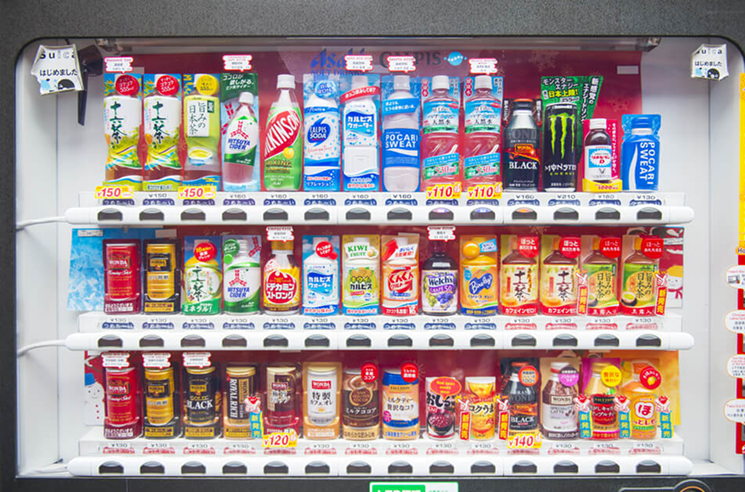
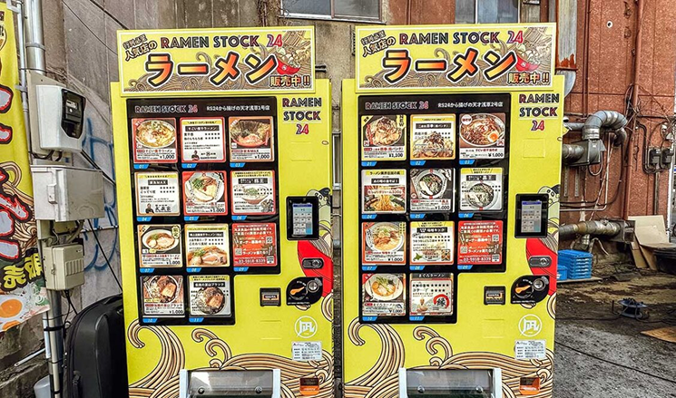
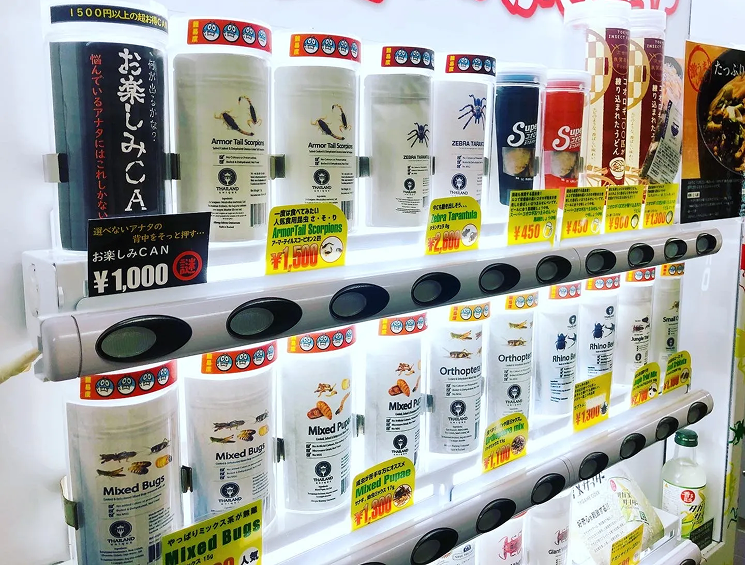
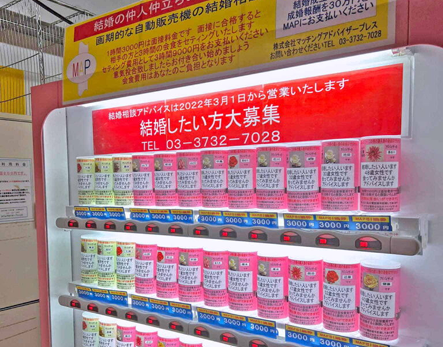

Photographer: Akio Kon | Bloomberg
Sid Akito · Staff Member
Last Updated: October 23, 2024
Ongoing popularity of vending machines
Vending machines are a staple in Japanese culture and daily life.
In Japan, there are a variety of unique and odd vending machines which can dispense anything from piping hot food to crawling insects.
This begs the question, why are vending machines so popular in Japan?
Three of main contributors to their popularity are the Japanese lifestyle, the weather and Japan's low crime rates for theft and vandalism. Due to the busy work culture of Japan, when you are on the go it is convenient to get food or drinks from vending machines. For instance, busy residents can save time by buying whatever they need on the way to work or school, especially when they are in a rush or taking public transportation. It is fairly cheap which means if you have spare pocket change, you can quickly buy whatever you need.
The weather also plays a big role in its popularity, since when people are in need, they can get cold drinks in the hot summer and hot drinks in the cold winter. As well as in the event of a natural disaster, they are programmed to give out drinks for free, meaning that people can easily get a drink if they are not able to get one.
Since the country's crime rate of theft and vandalism is so low, manufacturers are able to install an abundance of vending machines without much needed security or surveillance. This means that they can be installed both outside and inside region throughout the country.
Types of Vending Machines
Hot and Cold Vending Machines

One of the most common vending machines that you will find in Japan are drink vending machines. With the invention of the hybrid hot and cold vending machine, vendors are not required to have two separate machines! As stated earlier, these machines are especially beneficial based on the weather, since you can get a cold drink during the summer months, and a hot drink during the winter months. You can tell the difference from hot and cold drinks based on the colour of the sign. Cold drinks being sold have blue signs and hot drinks have red signs. Some common drinks you can expect to get are bottles of water, tea orfruit juices.
Hot Food Vending Machines

Two ramen stock vending machines side by side | Plan my Japan
Some variants of hot food vending machines offer ramen and hot soups, such as corn soup, miso soup or tomato. You can quickly and efficiently order a large variety of piping hot food from a vending machine for cheap. Upon ordering your food, the machine will heat your choice of meal until hot and ready to eat. This is especially useful for workers or people who may not have that much time to cook, or are tired after a long day of work and need a quick and convenient meal.
Edible Insect Vending Machines

Insect Vending Machine | Tokyo Dreamlife
One of the more unusual items being sold in vending machines are edible insects. The companies manufacturing the cans are promoting them as a nutritious high source of protein. In addition to that, bugs have a better impact on the environment, requiring significantly less feeding and water in comparison to livestock. From scorpions to chocolate covered grasshoppers, the selection of bugs offered are certainly diverse.
Matchmaking Vending Machines

Matchmaking Vending Machine | TheSmartLocalJapan
The dating agency Matching Advisor Press (MAP) set up a vending machine for those interested in finding their potential match. The cans sold inside the machine contain phone numbers of available dating candidates for those seeking a long term relationship.
Each of the cans display the individual's age and gender, represented by the colour of the can; pink for women and beige for men. As well as the contact information of each of their advisors representing them. If a can is bought, the advisor performs an interview with the buyer to see if both individuals would be a good match. Upon being approved, MAP would set the two together on a three hour dinner date.